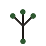

One thing at a time.
Pick a single intention for today. Everything else fades back. No badges, no streaks, no shame loops if you skip a day.
Simple, low-stimulation tools to help you organize life with ADHD or AuDHD. No overwhelming dashboards. No streaks to break.
Most productivity apps were designed for people who already feel organized. NeuroBotanica starts from the opposite assumption — that your day is loud, your tabs are open, and you only need one thing to be quiet: this.
Pick a single intention for today. Everything else fades back. No badges, no streaks, no shame loops if you skip a day.
Warm neutral palette. Generous whitespace. One sage accent that only appears when something matters. Designed not to compete for attention.

03 · GROWTHWe measure tiny finishes, not arbitrary productivity. A planted thought, a tended task, a quiet bloom. Slow growth counts here.
Open the app, plant something, close the app. That's the whole loop. It works on a Tuesday at 2pm and on a Sunday at midnight.
Drop in whatever's on your mind — a task, a thought, a half-formed worry. Type it once. We'll hold it for you.
Pick one thing for today. Just one. The rest waits, quietly, without flashing a number at you from a tab you never asked to count.
Mark it done when it's done. No celebration animation, no confetti. Just a soft check, and the rest of your evening back.
The beta is free, private, and arrives once a week — on Tuesdays — with a single new build. No marketing emails. We promise.
Request beta access